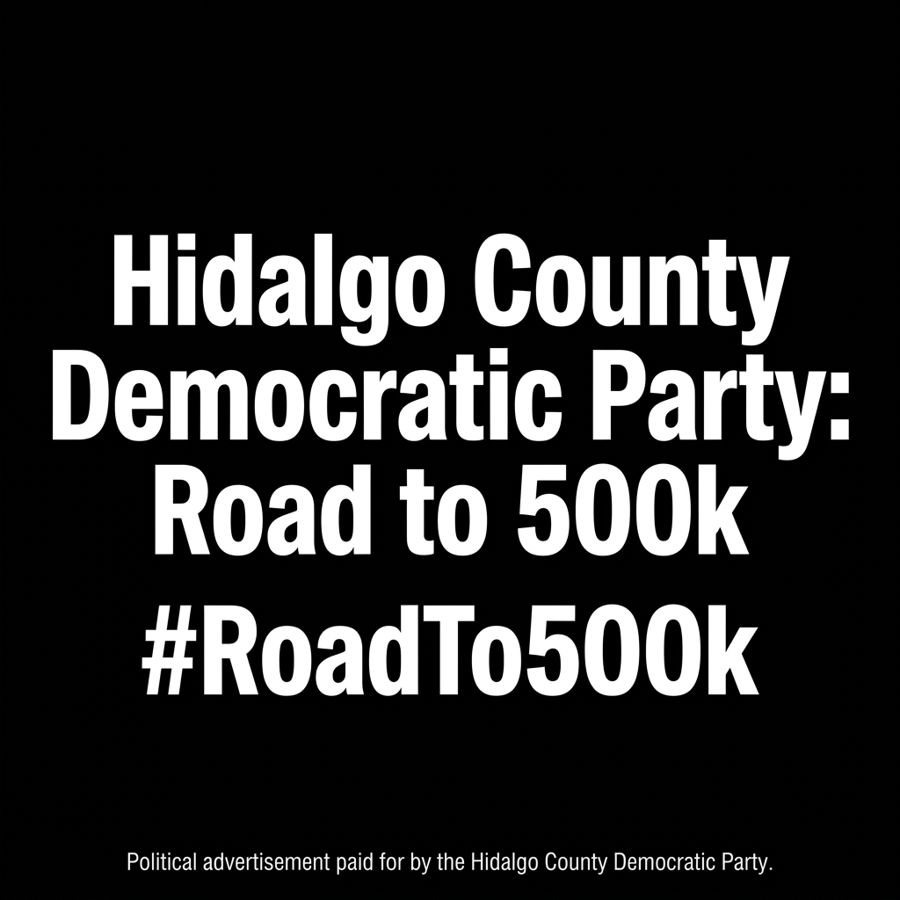
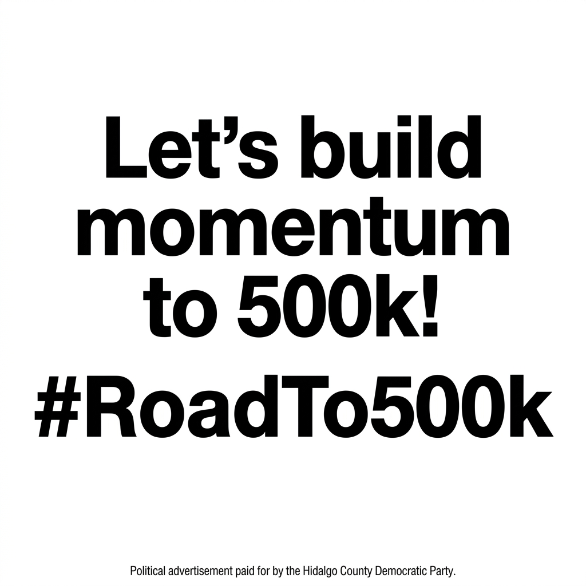
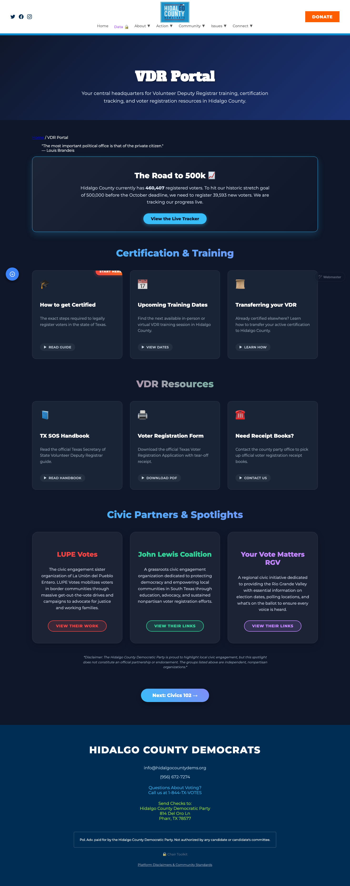
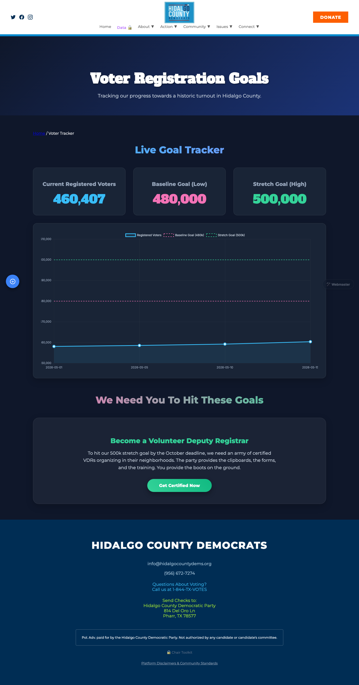

FOR IMMEDIATE RELEASE • JUNE 5, 2026
PRESS RELEASEThe Road to 500k: The Ultimate Voter Registration Drive
MEDIA CONTACT:
Hidalgo County Democratic Party
Email: info@hidalgocountydems.org
MEMORANDUM
TO: All Hidalgo County Democratic Party Members, Volunteers, Precinct Chairs, and Supporters
FROM: Richard Gonzalez, Chairman, Hidalgo County Democratic Party
SUBJECT: The Road to 500k: The Ultimate Voter Registration Drive
Hidalgo County is the beating heart of South Texas, and our political power lies in our numbers. Today, we stand at exactly 460,407 registered voters. Through the natural growth of our vibrant community, we net roughly 1,000 new voters each month. With just five months remaining until the October voter registration deadline, organic growth puts us at around 465,000 voters.
But Democrats do not settle for the status quo. We are built for action, and the stakes for our state are simply too high to leave power on the table.
That is why today, the Hidalgo County Democratic Party is officially launching the "Road to 500k" Voter Registration Drive (#RoadTo500k).
THE NUMBERS:
- Current Registered Voters: 460,407
- Projected Natural Baseline (October): ~465,000
- Our Baseline Action Goal: 480,000
- Our Stretch Goal (BHAG): 500,000
To hit our baseline goal of 480,000 voters, we need our members, precinct chairs, and volunteers to aggressively register at least 15,000 new voters over the next five months. That means carrying registration cards wherever you go. That means hitting the pavement, knocking on doors, and engaging the unregistered eligible voters in our own neighborhoods.
But we are a party that dreams bigger. Our Big Hairy Audacious Goal (BHAG) is to cross the threshold of a massive 500,000 registered voters.
Reaching half a million registered voters is more than just a milestone. It is an earth-shattering statement. It sends an undeniable message to the rest of Texas that the Rio Grande Valley is organized, mobilized, and ready to determine the future of this state.
Our community’s future depends on the leaders we elect, and those leaders are chosen by the people who are registered and ready to vote. If we want to defend public education, protect reproductive rights, and build an economy that lifts up working families, we have to expand the electorate.
Are you ready to make history?
Join the Road to 500k today. Step up, get trained as a Volunteer Deputy Registrar, grab a clipboard, and let’s get to work.
Five months. 15,000 new voters to hit our baseline. Half a million strong to change the state.
Let’s go.
INSTRUCTIONS FOR PRECINCT CHAIRS
As you mobilize your volunteers and organize your local neighborhood block walks, please ensure all digital and printed outreach materials feature consistent messaging:
- Unified Hashtag: Always use
#RoadTo500kon social media. - Branding Elements: Please use the official graphics below on your personal Facebook and Instagram pages to build momentum.
- Action Link: Always direct unregistered voters or potential VDRs to our new tracking portal: hidalgocountydems.org/voter_registration_tracker.html
- VDR Portal: For all certification resources: hidalgocountydems.org/vdr_portal.html
OFFICIAL #ROADTO500K MEDIA GRAPHICS
Graphic 1: The Core Mission

Graphic 2: Let's Build Momentum!

Website Tracker Previews


ABOUT THE HIDALGO COUNTY DEMOCRATIC PARTY
The Hidalgo County Democratic Party is dedicated to empowering the working families of South Texas, advocating for robust public education, accessible healthcare, and equal opportunities for all. Under the leadership of Chairman Richard Gonzalez, the Party is actively organizing to ensure every eligible voter has a voice in our democracy. Chairman Gonzalez is committed to building a sustainable, organized, and powerful political infrastructure in the Rio Grande Valley—leaving the Party stronger, larger, and more effective than ever before.